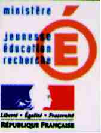
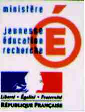

|
Livret pédagogique sur les plantes aromatiques |
Collection : Les Carnet de Zita
Ca y est Zita a débarqué à l'ARPCV... Zita ? Mais qui est-ce ? Une nouvelle bénévole de l'ARPCV ? Pas tout à fait ...mais presque ! Elle va effectivement travailler pour l'association, mais d'une façon plutôt originale...
En effet, Zita c'est elle
Une petite abeille qui va faire découvrir aux enfants les plantes aromatiques et médicinales.
Elle les connaît toutes...leurs origines, leurs utilisations et même les légendes qui s'y rapportent !
Zita est issue de la collaboration entre l'ARPCV et une jeune illustratrice : Sarah Rivière.
Le premier volet de la collection Les Carnets de Zita sera donc consacré aux plantes aromatiques sous forme d'un livret pédagogique.
Basilic, Thym, Sarriette et bien d'autres n'auront bientôt plus de secrets pour les enfants dès 8 ans.
De plus, ce carnet leur laissera une grande place libre pour coller, dessiner, ou calquer leurs plantes préférées, il pourra même leur servir d'herbier !
Cet ouvrage a reçu le soutien financier du Conseil Régional PACA, du Conseil Général 13, de la Direction Régionale et Départementale Jeunesse et Sports ainsi que de la DIREN,

 


DISPONIBLE A L'ARPCV - 4 € ( 3 € prix adhérent)
Commande possible au 04 42 29 71 21 par e-mail